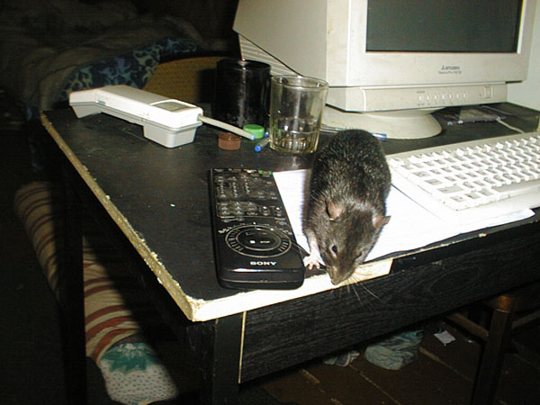

Мулька Шилохвост
Июнь-октябрь 2005 (2)

— Есть "смирно!"! А равнение куда?

— Пролил сметану? Сейчас уберу...

— Ой, уже можно гулять?

— Не, тапочек — не мой размер...

— А почему этикетки клеят на бутылки, а не на пробки, из которых я пиво пью?
— Так, это я еще не читал...

— Вот вытираюсь об этот угол, вытираюсь, а потом кто-то запах перебивает...
— Докладываю! Порядок в комнате идеален для проживания крысов!

— Не, кровать — это для отдыха. Я по комнате пойду бегать...

— Вообще-то столы надо вкуснее покупать...

— И что этот мелкий грызун делает здесь, возле компа?
— Что-то я подустал...

— Это хорошо, что носки чистые!
— Ну сплю я на мансарде!

— Замуровали, демоны!
17 сентября 2004

— Сижу, значит, я на завалинке...

— Вот посмотри мне в глаза и скажи, что не выпустишь погулять!

— Правда, я очень милый и трогательный? А зубы я пока спрятал...

— Вот посмотрите сами, на какой рухляди приходилось жить, пока я не уговорил хозяев купить новый холодильник!
— А что там внизу?